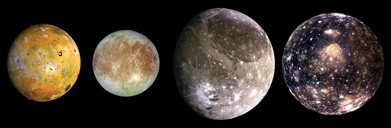

Първите известни спътници на Юпитер са галилеевите луни открити от Галилео Галилей през 1610 г. През следващите четири столетия още девет значително по-малки спътника са открити при наземни наблюдения. През 1979 г. Вояджър 2 открива три спътника на близки орбити.
Йо е най-вътрешният от четирите Галилееви спътници на Юпитер и един от най-големите спътници в Слънчевата система с диаметър от около 3500 km. Европа е четвъртият по големина естествен спътник на Юпитер и най-малкият от четирите галилееви луни. Ганимед е най-големият спътник в Слънчевата система, с радиус по-голям от този на Меркурий (но със значително по-малка маса) и от Плутон. Калисто е вторият по големина естествен спътник на Юпитер и третият в Слънчевата система.
Още информация за Луните на Юпитер
Галилееви спътници